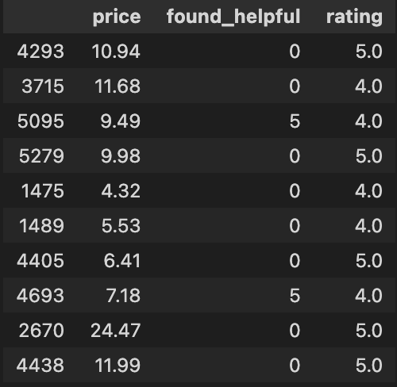
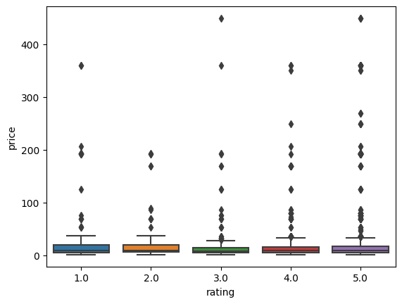

Overview
Linear regression is a widely used statistical method for modeling the relationship between a dependent variable and one or more independent variables. One of the main advantages of linear regression is its simplicity and ease of implementation. It allows for easy interpretation of the relationship between the predictors and the response variable and provides estimates of the magnitude and direction of the effect of each predictor on the response variable. This makes it a useful tool in various fields, including finance, economics, and social sciences.
However, linear regression also has some limitations and assumptions that need to be considered when interpreting the results. One of the key assumptions of linear regression is that the relationship between the predictors and the response variable is linear. If the relationship is nonlinear, then linear regression may not be appropriate. Additionally, linear regression assumes that the residuals (the difference between the predicted values and the actual values) are normally distributed and have equal variances. Violations of these assumptions can lead to biased estimates and inaccurate predictions.
Another potential disadvantage of linear regression is the risk of overfitting the model to the data. If too many predictors are included in the model relative to the sample size, the model may fit the noise in the data rather than the underlying relationship. This can lead to poor out-of-sample predictions and decreased generalizability of the model. Therefore, it is important to balance the number of predictors included in the model with the sample size and to use techniques such as cross-validation to evaluate the model's performance.
Data Prep and Code
The data was initially cleaned and prepared in Data Prep and Part 1 of Clustering parts. The data used in this part is the numerical data with the following columns: price, found_helpful and rating. Data was filtered to include only these columns after the cleaning described in the above mentioned sections.
Neural Networks are a supervised learning method because to train NNs we require labelled data points to evalauate the cost and backpropagate the gradients. The data that was prepared in the sections menrioned above already has labels in the form of categories of products and user rating. We will use this to train and test the NN classifier and observe how well it is able to use product reviews to identify product categories and user ratings.
Shown below is a sample of the dataset used for this part.

The independent varaibles here are price and founs_helpful and the dependent vaiable (response) is rating.
Link to sample data file and code:
- Data file: https://github.com/anup44/machine_learning_project/blob/main/lr_num_data_sample.csv
- Neural Networks Code: https://github.com/anup44/machine_learning_project/blob/main/linear_regression.ipynb
Code
import numpy as np
import pandas as pd
import statsmodels.api as sm
import seaborn as sns
meta_df_1000 = pd.read_parquet('meta_df_1000_cleaned.parquet')
reviews_df = pd.read_parquet('reviews_df_clean.parquet')
merged_df = pd.merge(meta_df_1000, reviews_df, on='asin', how='inner')
merged_df['category_1'] = merged_df.category.apply(lambda x: x[1])
merged_df['rating'] = merged_df['rating'].astype(float)
merged_df.head()
merged_df_lr = merged_df[['price', 'found_helpful', 'rating']].dropna()
print (merged_df_lr.shape)
merged_df_lr.sample(10)
lr_x = sm.add_constant(merged_df_lr[['price', 'found_helpful']])
lr_x
mod = sm.OLS(merged_df_lr['rating'], lr_x)
res = mod.fit()
print (res.summary())
sns.boxplot(x = 'rating', y='price', data=merged_df_lr)Results
The columns price and found_helpful were used as predictors to check if they could explain the variance in rating. A constant was added to accomodate for the intercept term in the linear regression model. The code shown below adds this contant term and runs a linear regression model using the statsmodels library.
lr_x = sm.add_constant(merged_df_lr[['price', 'found_helpful']])
lr_x
mod = sm.OLS(merged_df_lr['rating'], lr_x)
res = mod.fit()
print (res.summary())The resulting summary is shown below.
OLS Regression Results
==============================================================================
Dep. Variable: rating R-squared: 0.000
Model: OLS Adj. R-squared: -0.000
Method: Least Squares F-statistic: 0.3606
Date: Mon, 01 May 2023 Prob (F-statistic): 0.697
Time: 15:26:01 Log-Likelihood: -4898.4
No. Observations: 3066 AIC: 9803.
Df Residuals: 3063 BIC: 9821.
Df Model: 2
Covariance Type: nonrobust
=================================================================================
coef std err t P>|t| [0.025 0.975]
---------------------------------------------------------------------------------
const 4.1184 0.024 171.355 0.000 4.071 4.166
price 0.0004 0.000 0.762 0.446 -0.001 0.001
found_helpful -0.0005 0.001 -0.401 0.688 -0.003 0.002
==============================================================================
Omnibus: 636.890 Durbin-Watson: 1.735
Prob(Omnibus): 0.000 Jarque-Bera (JB): 1098.642
Skew: -1.387 Prob(JB): 2.71e-239
Kurtosis: 3.954 Cond. No. 56.0
==============================================================================
Notes:
[1] Standard Errors assume that the covariance matrix of the errors is correctly specified.The results printed in the summary show high p-values for both predictors and a vary bad R-squared value. This implies that none of the selected predictors are able to explain the variance in the response variable and as a result this model is bad in predicting the rating.
A box plot of price for different rating values is shown below.
This plot shows that the distribution of price across all ratings is more or less same disregarding the outliers. This aligns with the results of the regression model that say that price does not explain the variability in rating.
Conclusion
In this section, a linear regression model was implemented in python and was employed to study the relationship between the predictors (price and found_helpful) and the response (rating).
Based on the results that we observed, it can be concluded that linear regression may not always be a suitable method to model the relationship between predictors and response variables. In this specific case, the model built using the price and found_helpful predictors was not able to explain the variance in the rating response variable, as indicated by the low R-squared value and high p-values for both predictors.
Furthermore, the box plot of price for different rating values also suggests that price may not be a significant factor in determining the rating. Therefore, it is important to carefully select appropriate predictors and assess their significance before using linear regression as a modeling technique.
In summary, while linear regression can be a useful statistical tool for modeling the relationship between predictors and response variables, it is important to consider its limitations and assumptions. This includes checking for linearity of the relationship, normality and equal variances of the residuals, and potential overfitting of the model.
Despite these limitations, linear regression can be very useful in many cases. For example, it can be used to predict sales based on advertising expenditure, to model the effect of temperature on crop yield, or to analyze the relationship between education and income. Linear regression can also be extended to include interaction terms and polynomial terms to model more complex relationships between predictors and response variables.
Overall, the selection and interpretation of predictors should be done with care, and other modeling techniques, such as non-linear regression or machine learning algorithms, should be considered when linear regression assumptions are not met. When used appropriately, linear regression can provide valuable insights into the relationship between variables and help to inform decision-making in a variety of fields.